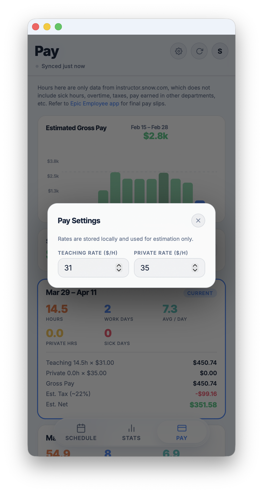
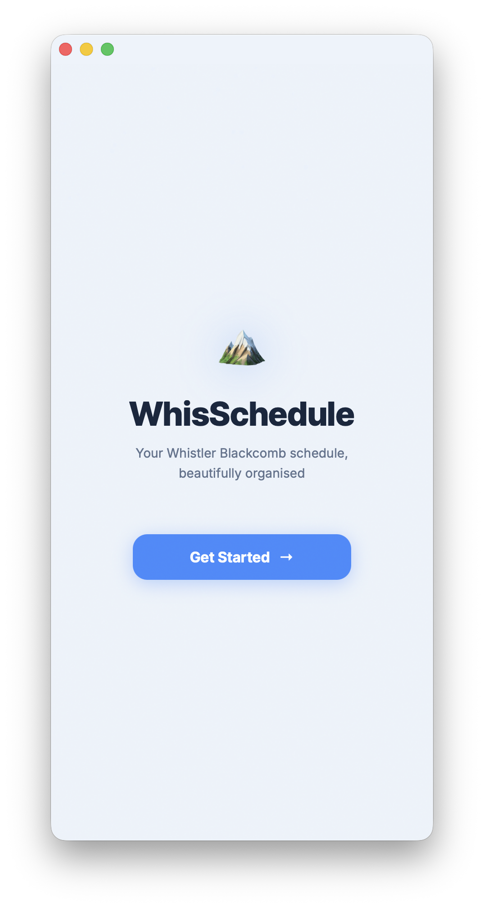
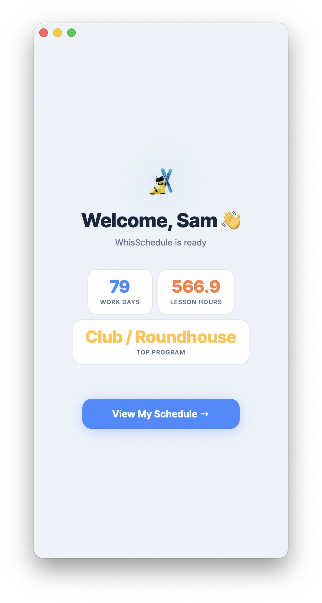
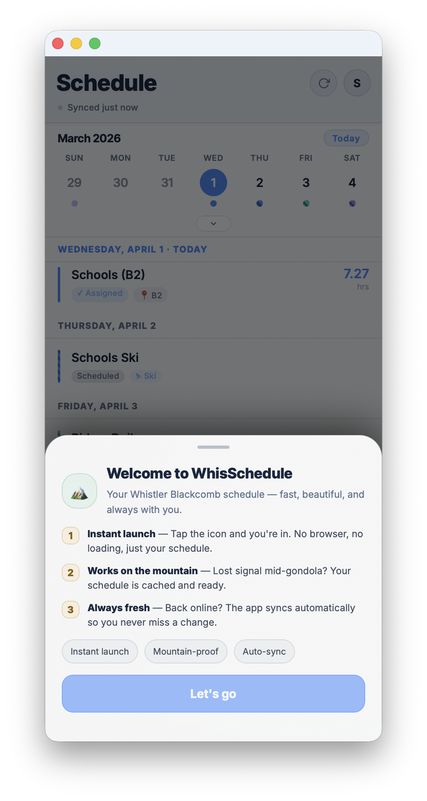

What the pitch looks like when we show the actual product.
This version trades lightweight generated surfaces for literal app screens. It is more concrete and visually persuasive, but it also comes with much heavier assets. The upside is immediate credibility: your manager sees the actual interface, not a simulation of it.
available for this page
schedule, stats, pay
onboarding included
larger deployed assets


Schedule
The daily planning story is instantly believable.
The real schedule screens show exactly why the app matters: they compress a messy portal workflow into a mobile rhythm that an instructor can scan between assignments.

The screenshots show the calendar rail, day grouping, hour totals, assignment tags, and private lesson detail in one glance. That is stronger than describing the feature abstractly because the manager can judge density, clarity, and polish directly.
Stats
The season narrative becomes obvious.
The stats captures do a good job of showing that WhisSchedule is not just a viewer. It turns the season into patterns: workload, streaks, busiest periods, heatmap density, and program mix.


Pay
The estimator feels grounded, not speculative.
The real pay screens make the feature easier to defend because the caveat is visible in context. It reads as a practical estimate layered onto schedule data, not a replacement for payroll.


Bonus
The onboarding flow helps sell product maturity.
If you want to show that the app is more than a utility hacked together for one user, the onboarding screens help. They imply installation, first-run setup, and a more complete product arc.


